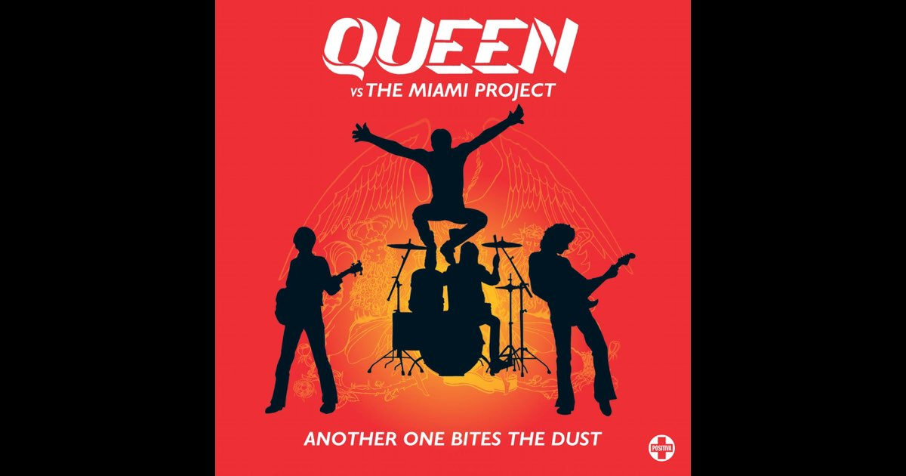

歌曲中的贝斯
《Another One Bites the Dust》是少见的用贝斯起手带动音感的歌曲之一，它的贝斯线非常有辨识度：短促、重复、紧贴鼓组，同时用少量音高变化推动和声前进。学习时先抓住节奏，再逐渐加入音高和力度变化。

选择主音和调式后，音轨会显示该调式的一个八度音阶。32 steps 适合编写更长的贝斯句型，也可以点击或拖动音块进行试听和编辑。
BPM80
如果没有基准音，可以尝试从某一个具体的低音开始，先让每个音落在稳定的节拍上，再调整空拍和重复次数。然后调整主音、调式和 BPM，使整体节奏和音高更加贴合原曲。